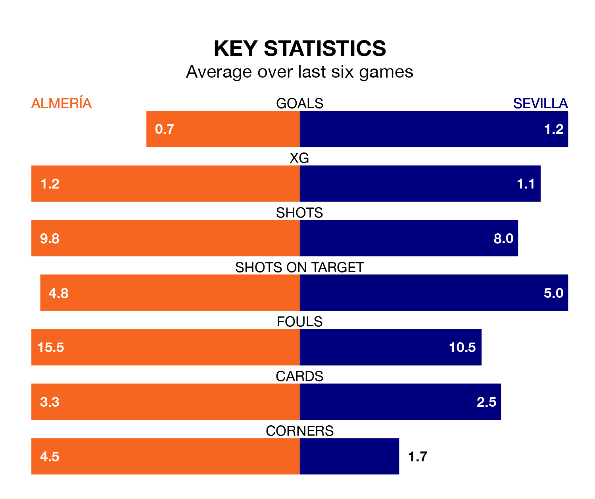

Almería face Sevilla at Power Horse Stadium Estadio de los Juegos Mediterráneos on late Monday looking to secure a first win in 28 La Liga games.
Almería have lost 18 and drawn nine matches since they last earned three points.
They face a Sevilla side who have won six and drawn nine over that time.
Almería are bottom of the table after 27 games, of which they have won none and drawn nine, earning nine points.
Sevilla are six places ahead of the hosts in 14th, with six wins and nine draws putting them on 27 points.
In the last 10 years, Almería and Sevilla have played each other on six occasions. Almería won one of them and Sevilla the other.
On average, Almería scored 0.8 goals and Sevilla 2.2 in those matches.
Their last meeting was on September 26, when Sevilla won 5-1 at home.
With 25 goals in 27 games so far this season, Almería are scoring at below the league average rate with 0.9 goals per game. And they are conceding more than average, letting in 55 goals at a rate of 2.0 per game.
The away side are also below average scorers, with 1.2 goals per game, compared to a league average of 1.3. They have conceded 1.5 goals per game.
Almería's last match was on March 1, a 1-0 loss against Celta de Vigo.
Sevilla beat Real Sociedad 3-2 last time out, on March 2, with Youssef En-Nesyri (two) and Sergio Ramos on the scoresheet.
Monday's match will be refereed by Ricardo De Burgos Bengoetxea, who has taken charge of 13 La Liga games so far this season, issuing three red cards and booking 51 players. He has awarded one penalty.
The last Almería game De Burgos Bengoetxea refereed was a 2-1 away loss to Atlético Madrid on December 10. His last Sevilla match was their 1-1 draw at home against Real Madrid on October 21.
Updated: 09:34 (UTC), 08/03/24